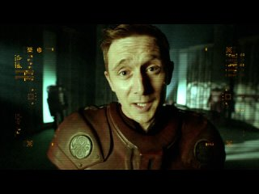
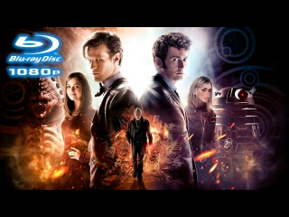
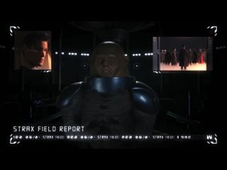
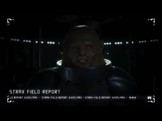
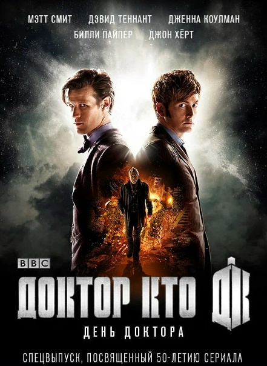

чаще всего это 14-я или 15-я серия седьмого сезона
* Серия выходила в 3D в кинотеатрах:
MVO: [TVShows], [Кириллица], [Sony SCI-FI], [BaibaKo], [ВГТРК] или Original [ENG] Субтитры: TrueTransLate (RUS) | |
 |  |
 |  |
The Day of the Doctor
спецвыпуск в честь 50-летнего юбилея сериала
23 ноября 2013
Формат: 75-минутный эпизод
| Варианты озвучек: | * Разные: смотрите по инструкции чаще всего это 14-я или 15-я серия седьмого сезона * Серия выходила в 3D в кинотеатрах: |
|---|---|
| Скачивание и просмотр: |
В 2013 году в Национальной галерее Лондона пробуждается нечто ужасное, в то время, как в 1562 году смертельный заговор зреет в Елизаветинской Англии, а вдалеке оттуда Война Времени достигает сокрушительного заключения. Вся действительность на кону, когда опасное прошлое Доктора возвращается, чтобы преследовать его.
